Consolidated illustrated research edition
November 2026
Reading guide. Parts I–III preserve the previously archived mathematical companion and the two latest research extensions. Part IV reconstructs additional chat visuals. All 27 numbered diagram designs are included as SVG and PNG, with the supplied original photograph separately. Exact identities, conditional constructions and physical proof obligations remain distinguished.
Open the numbered visual atlas · Original interactive companion
Scope. This companion reconstructs the nine visual diagrams from the chat and collects the associated mathematics in reading order. The diagrams are recreated graphics, not screenshots of the interface. The original two research notes, scripts, logs and supplied image are retained unchanged. Exact algebraic identities are distinguished from proposed physical mechanisms.
Reference: the 2008 Barbury Castle π crop formation (photograph not reproduced here). The proposed three-circle interpretation is a GFD hypothesis, not evidence of a physical field mechanism.
The decimal angular encoding uses increments of . For the ten digits of the rounded representation 3.141592654,
This is four revolutions for that particular rounded representation, not a period of π. The three outer circles inspired the three-subcycle hypothesis. A separate exact mathematical connection is the eight-vertex Walsh transform:
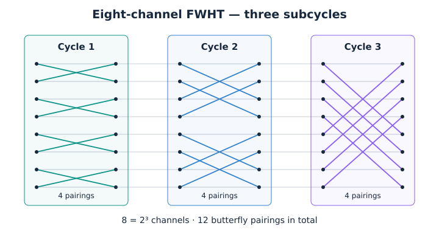
The twelve butterfly pairings correspond combinatorially to the three groups of four parallel edges of a cube. The dual tetrahedra occupy its eight vertices. A Walsh sign phase does not, by itself, derive a physical π digit-address schedule.
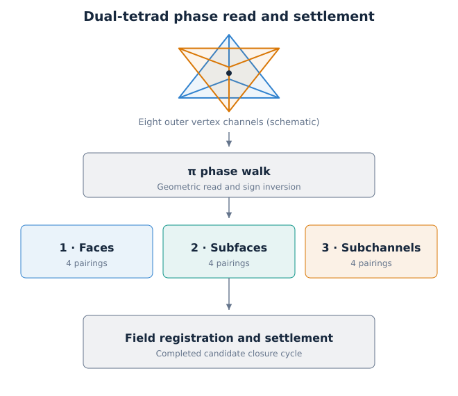
Eight vortex amplitudes admit a 64-coordinate dyadic operator ledger. A candidate three-level address structure is with . A physical identification between the dyadic ledger and boundary records is still needed.
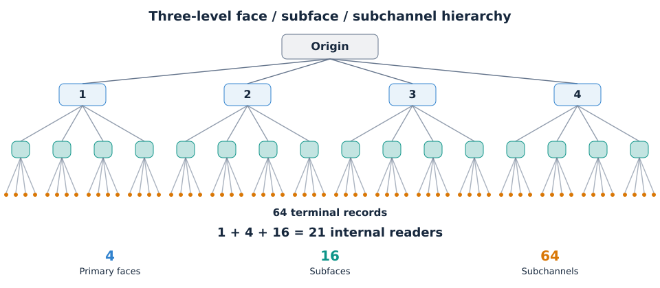
The normalized four-way Hadamard matrix and full relational FWHT are
The reversible hierarchical read separates one common mode and contrast strata of dimensions 3, 12, 48. This tree is distinct from the full FWHT, which also mixes details within each stratum. Under the simultaneous nonzero-digit cycle fixing zero,
The invariant contrast dimensions are . The particular middle-grade assignment is a choice, not forced by spatial symmetry alone.
With a proposed elementary amplitude , the top exterior-power read on the 21-dimensional contrast sector yields
A serial network of independently routed reflected modes is an alternative mathematical realization. Each stage has a lossless dilation
An ordinary one-mode projection has intensity , not . Physical selection of the collective vertex and elementary attenuation remains open.
The inherited coupling polynomial with is
The tree-level GFD target is .
A centered regular tetrahedron has four faces of solid angle . The central Triforce tile subtends , the three lateral tiles each . For four assumed equally weighted subchannel addresses per tile,

Let , , and . Then
In the quadrature metric , . Equivalently, with ,
The invariant space contains one conserved scalar and twenty-one weighted-zero contrasts:
The FWHT of the weights has only four nonzero coordinates:
The squared contrast norm is versus for the common mode. This connects the boundary read to an invariant intermediate direction but does not derive its physical signed coupling.
For a dimensionless microscopic scalar with stiffness and collective coupling amplitude ,
With at fixed universal parameters,
Matching the inherited drainless weak-field functional
gives
The boundary conjugate is the source registration, not an additional stored energy:
At the inherited saturation threshold the spherical capacity is
The three inherited closure equations are
Their unique positive joint solution is
For the proposed, not derived, loop factor and :
| Quantity | Joint compatibility value | Reference deviation |
|---|---|---|
| Electron mass | kg | −22.48 ppm |
| Gravitational constant | SI | +32.84 ppm |
| Electromagnetic closure radius | 2.8180036761 fm | — |
The selected acceleration may itself depend on electron properties; this is not then an independent prediction. The radius is not a measured physical electron size.

The original 36-coordinate field and its two-site 72-coordinate Bloch operator have a simple lowest scalar band locally near zero momentum:
For normalized eigenvector , reduced resolvent and ,
| Interface | Calculated dimensionless curvature |
|---|---|
| Full Triforce | 0.1242946733 |
| Central-mediated | 0.1050941805 |
Their ratio is approximately 1.1827, not 17/13. The primitive volume is with microscopic energy unit . For the unit-normalized scalar envelope,
The dimensionful scale is not fixed by the dimensionless Hamiltonian.
On the sixteen ordered pairs define . The three operators including an independent origin scalar are

The twelve cross-pair diagonal contributions, four zero self-pair contributions and independent origin yield a balanced locked-read stiffness
This is a trace average, not the rank of (which is seven). The Walsh invariance follows from
For origin share and conditional self-pair share ,
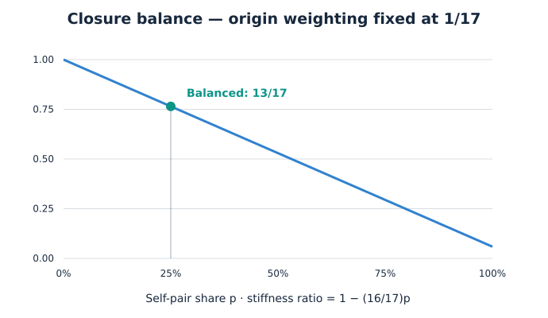
Relative TetB stiffness: 0.764706 · Inverse stiffness ratio: 1.307692
The π-walk must prove these occupation and dwell weights, not merely coverage. A deterministic equally weighted snapshot read is sufficient for the algebra but is not derived native motion.
For the proposed common scalar kernel and elementary electrical transmission , the electron pair interaction magnitude is
Thus
Substitution into the gravitational matching identity gives
This is conditional on the shared scalar-kernel source normalization and the collective read, not a derivation of Maxwell dynamics or electromagnetic force sign. With , equating the Hamiltonian stiffness to the electromagnetic reference requires
If , the required lattice coordinate unit is (full) or (central). These are matching targets, not physical lengths independently predicted by the graph.
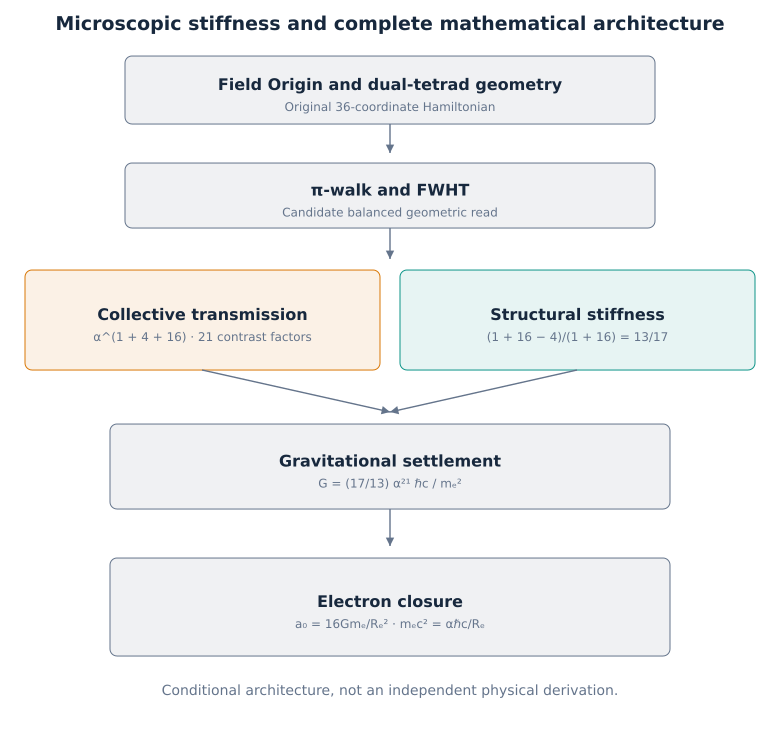
The exact finite-dimensional identities, calculated graph curvature and conditional matching relations are supported by the included verifiers. The native autonomous π-walk, selection of the collective attenuation, origin of the physical energy/length scales, electromagnetic normalization premise and loop correction remain open. Conservative unitary dynamics do not supply attenuation without an additional channel or projection. No empirical validation or remote repository modification is claimed.
See research/WEIGHTED_CLOSURE_SETTLEMENT.md,
research/MICROSCOPIC_STIFFNESS_DERIVATION.md and
verification/ for original notes and reproduction
instructions. The visual reconstructions are available in both SVG and
high-resolution PNG.
GFD Standard Field Model — research extension, November 2026. Companion to the preserved weighted closure and microscopic stiffness notes. Exact: finite-dimensional identities and response variational primitives. Conditional: chosen optical transmission, boundary sampling, static domain decomposition, and illustrative kinetic completion. Open: native H36 dynamics, physical charge, spin-2, full covariant SST, independent constants, and physical interpretation of the π formation. This is not a completed unified theory.
Let the address space be (a,b,c) in {0,1,2,3}³ with weights w=1/32 for b=0 and 1/96 otherwise, using equal candidate subchannel subdivision. Let P_k be conditional averaging over addresses sharing their first k digits, k=0,1,2,3. Thus P_0=1wᵀ, P_3=I, and P_jP_k=P_min(j,k). With W=diag(w), WP_k=P_kᵀW. The orthogonal detail projections D_k=P_k-P_(k-1) satisfy D_iD_j=δ_ij D_i and sum to I-P_0. Raw ranks are 3,12,48. For the simultaneous digit cycle 0→0, 1→2→3→1, the invariant projector Q=(I+M+M²)/3 commutes with all these projections; its rank is 22 and invariant detail ranks are 1,4,16. These are abstract read channels, not automatically Pauli or connection components.
For t=√α define J_k=I+(t-1)D_k. Then
The invariant determinants have squared moduli α, α⁴, α¹⁶. Their product is α²¹. The three operators commute and can be applied in either order, so the algebra does not prove temporal ordering. On the common scalar the transmission is one; on each individual contrast it is t, not t²¹. Only a collective determinant/all-pass selection has the proposed gravitational suppression.
There is an explicit conservative realization for each stage. In weighted-orthonormal coordinates let A_k=W(1/2)J_kW(-1/2), B_k=√(1-t²) W(1/2)D_kW(-1/2). Then the block matrix [[A_k,B_k],[B_k,-A_k]] is orthogonal. It conserves norm on the joint system plus complementary registers. The complement must carry the missing amplitude; no microscopic physical energy law is derived from this norm identity. A logarithmic contraction generator on the retained channel is -(I-P_0) in dimensionless time, with duration -ln(t). It is not the native Hermitian H36 generator.
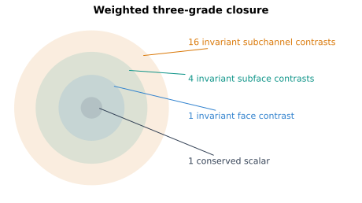
A balanced reference face-pair schedule can be constructed by reading all 64 addresses once (four repeats of each ordered pair) and adding four independent origin reads with equal dwell weights. Then the 68 records give origin share 1/17 and pair-diagonal share 1/4, yielding 13/17 for the locked exchange read. A permutation generated by any deterministic address schedule preserves this count, but π-digit coverage is not a proof of the native dwell weights or a physical period. Do not conflate uniform structural read weights and physical solid-angle weights: a central tile carries half the boundary flux on its face; if the self-pair is identified with the central tile on every face, the weighted diagonal share is 1/2, not 1/4. A physical dictionary and distinct normalization must be established.
Define r=μ/(1-μ), μ=r/(1+r), x≥0. The existing drained law μ_d=x/(1+x) becomes x=r. The existing internal bound law x(1-μ_b)²=μ_b becomes x=r(1+r). Use discrete regime label b=0,1 (not an adjustable continuous parameter). Both are stationary minima of
At x=0 the minimizer is r=0. For b=1 use r=2x/(1+√(1+4x)). This is a common mathematical representation, not a microscopic derivation of the extra feedback or a proof that TetB selects it. The internal bound law is not the macroscopic drainless gravitational law.
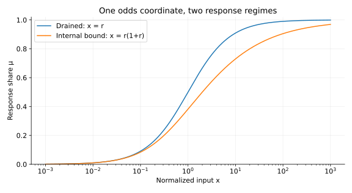
Let y=x². Define V’_b(μ)=(r+br²)² and V_b(0)=0. Then
Their convex conjugate on 0≤μ<1 is
Explicit forms:
The static mixed functional for drained gravity is ∫{a0²[μ |∇Φ|²/a0² - V_0(μ)]/(8πG)+ρΦ} dV; vary μ by maximization and Φ by minimization (appropriate boundary conditions). Eliminating μ gives the original AQUAL form. The flux is A(p)=μ(|p|/a0)p, p=∇Φ. Its transverse and radial Jacobian eigenvalues are μ and μ+x μ’; both positive for x>0. The gradient energy is strictly convex but degenerates quadratically at x=0; do not assert uniform ellipticity. At low x both laws have μ~x; at large x the complementary share behaves as 1/x (drained) and 1/√x (internal bound). F_1 is a response primitive, not a new macroscopic law. For drainless gravity use F(y)=y. The action is a static reduced functional, not the full four-term covariant SST.
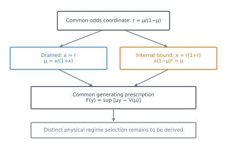
For a fixed region D with owned density ρ and admissible boundary trace f, define W_D[f]=inf_{Φ|∂D=f} E_D[Φ] using the appropriate static gravitational functional, with attained solutions or infima. Translation of Φ by a constant C leaves gradient energy unchanged, hence
In the differentiable case D W_Df=M_D and D²W_Df=0. With n outward, first variation gives boundary flux δW_D=(1/4πG)∮ n·A(∇Φ) δf. This makes the total source charge independent of boundary trace, even when the angular response changes. The sign for d=-Φ/c² gives the rest-energy register as -∂W/∂d_b=M_D c². It is the prescribed static source charge; it is not a derivation of mass from vortex energy or an ADM mass theorem.
For fixed disjoint child interiors and residual parent region, minimise their sum over common interface traces g_i:
The equality follows from decomposition/gluing of admissible potentials. Variation of g_i matches equal-and-opposite conormal flux. Internal interface terms cancel; the common-shift identity adds owned source charges. This is exact static distributed processing conditional on the partition, shared continuous trace, and additive local action. Nonlinear responses need the entire relevant boundary functional or a controlled approximation, not just total mass. Moving or overlapping closure ownership, causal dynamical response and gravitational binding contributions remain separate proof obligations.
For a naive Lorentz scalar kinetic function F(X), X=η^{μν}∂_μΦ ∂_νΦ/a0², on a static spacelike gradient background X=x²>0, the principal symbol is proportional to μ η{μν}+2F’’(X)∂μΦ∂^νΦ/a0². Consequently the characteristic speed along the gradient is
This equals 1+1/(1+x) for the drained law and 1+1/(1+2r) for the internal bound law. Both exceed one for finite x>0 and tend to 2 in the deep limit; transverse speed is c. This is a characteristic-cone result for that specific scalar completion, not a claim about the full SST. The scalar kinetic coefficient vanishes at x=0. A direct substitution of the Lorentz-invariant X is therefore not enough to secure the stipulated metric-c closure threshold.
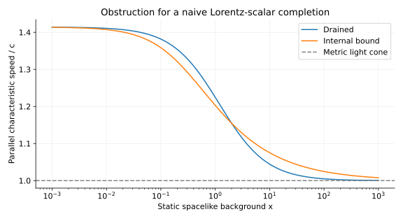
One illustrative static-background completion introduces a unit timelike field u, spatial projector h{μν}=g{μν}+uμuν (signature -+++), y=h^{μν}∂_μΦ∂_νΦ/a0², and kinetic coefficient A(y)=μ(√y)+√y μ’(√y). Consider local scalar Lagrangian proportional to A(y)(u·∂Φ)²/a0² - F(y). Linearizing around u·∂Φ=0 with fixed u and metric gives v_parallel=c and v_transverse=c√(μ/A)≤c for x>0. This is the smallest time coefficient in this ansatz that makes the fastest scalar characteristic no wider than the metric cone on those backgrounds. It introduces a physical time-direction field, not derived from H36. At x=0 the kinetic term degenerates; evolving u, arbitrary backgrounds, metric constraints, positivity and tensor propagation require further work. No claim of general causal or relativistic completion.
The previous conditional normalization follows from |T_G|²=α²¹, |T_E|²=α, the locked exchange stiffness ratio κ_G/κ_E=13/17, and a common reference pair-kernel magnitude. Then G=(17/13)α²¹ ℏc/m_e². Neither elementary α nor determinant source selection nor physical stiffness ratio has been obtained from native H36. The microscopic curvature remains D=0.1242946733 (full) or 0.1050941805 (central), yielding κ_micro=E_*D/(8a); the lattice energy and length scales require an independent dynamical equation. The electron joint compatibility relations in the preserved notes are unchanged. The proposed loop factor 1+α/(2π) is not derived. Reproducing a0 using the electron reference is not an independent prediction of m_e and G.
A true electromagnetic sector requires a local U(1) symmetry and Maxwell kinetic dynamics, not just the magnitude of an electrostatic pair kernel. For site amplitudes z_i and link U_ij, gauge-invariant hopping z_i†T_ij U_ij z_j is achieved by z_i→e^{iθ_i}z_i, U_ij→e^{iθ_i}U_ij e^{-iθ_j}; temporal connection is also required. The original H36 has a conserved global norm but its bare signed chamber occupation does not commute with H36. Hence this ordinary phase symmetry is not yet physical electric charge. A dressed conserved signed generator, compatible link dynamics, charge normalization and matter spin/statistics must be established. For gravity, universal coupling to stress-energy, local Lorentz covariance, nontrivial curvature transport and two propagating tensor modes must emerge; the scalar band pole E−E0∼Dk² alone does not supply them. A microscopic source variation should produce the boundary charge rather than assume ρ.
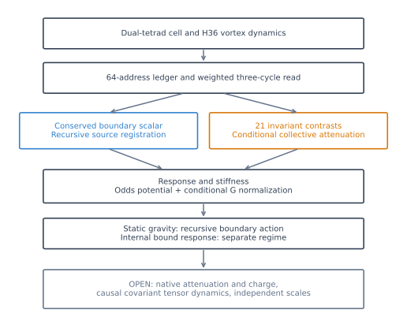
The central hypothesis is that the same field cell supports a lossless conservative internal engine, a coarse-grained registered boundary, a regime-dependent response potential, and recursive composition. The exact new results are the weighted three-stage factorization, two convex generating potentials and their explicit characteristic test. The physically unproved steps are native autonomous cycle/dwell selection, α and product source vertex, mass/charge and gauge normalization, causal tensor completion, and independent selection of the drained or internal bound feedback. The full SST action is not altered. The π crop image is inspiration, not evidence of the engine.
The most discriminating next calculation is to construct a single radius-dependent, gauge-compatible Hamiltonian on the original cell plus link/complement degrees of freedom and compute its retarded response about a stable circulating state. It must demonstrate (a) the three grade projections and dwell balance, (b) a source vertex selecting α²¹ rather than ordinary α, (c) the predicted stiffness ratio without fitting, (d) a stable, universally coupled stress-energy source and signed conserved charge, (e) a causal long-wave tensor spectrum. If any lower-order symmetry-allowed source vertex survives, the collective exponent is not dynamically protected. A conservative H36 by itself cannot produce all of these results without additional dynamics; this is the target, not a completed proof.
Run
OPENBLAS_NUM_THREADS=1 python verify_unified_closure.py in
this folder (NumPy, Matplotlib). The fresh verifier checks weighted
projectors, invariant grade ranks, determinants, orthogonal dilations,
response laws, Legendre forms and characteristic ratios (43 assertions).
It does not rerun earlier verifiers, test astrophysical data, or modify
GitHub. Diagrams are standalone SVG and PNG. Prior illustrated archive
contents are preserved.
GFD research extension — mathematical constructions and numerical checks; not a derivation of gravity from microscopic dynamics.
This note builds on the existing I Ching synthesis, circular closure walk, BBP synthesis, and three-sweep algebra. The crop formation is inspiration, not empirical evidence for the field hypothesis.
Let C shift the eight-dimensional slot basis cyclically, C|j>=|j+1 mod 8>. C^8=I. With the assumed BBP lap amplitude 1/16, an equal positive step factor is q=1/sqrt(2). Then
Use zero-based internal slot indices, with slot j representing denominator offset j+1, and w=(4,0,0,-2,-1,-1,0,0). Define the compensated read vector ell_j=w_j/q^j. Then
The compensation is necessary: the unmodified BBP weights applied directly to the equally attenuated internal slots give a different function. The displayed circular address labels are denominator offsets modulo eight, not internal indices. The resolvent poles are y=sqrt(2) exp(i k pi/4); the numerator cancels four of them. This realizes the known BBP formula as an eight-slot linear feedback transfer function, not as the native 36-coordinate Hamiltonian. Both the read weights and amplitude factor are inputs. The factor 1/16 is a series amplitude weight, not the electromagnetic fine-structure transmission alpha.
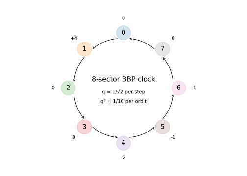
The octal step is a translation of Z/8, whereas the Walsh domain is (Z/2)^3. These groups are not isomorphic. Increment with input bits b2,b1,b0 obeys
Apply Toffoli to bit 2 controlled by bits 0 and 1, then CNOT to bit 1 controlled by bit 0, then X to bit 0. Repeating implements C^d. With normalized Walsh W8, the off-diagonal Frobenius norm of W8 C W8^T is sqrt(5), so a circular increment is not a Walsh-diagonal translation. Neither carries nor a complete 2pi rigid rotation generate a Hadamard transform by themselves. A candidate phase generator of a normalized involution h is P_-=(I-h)/2, so exp(-i pi P_-)=h. Its microscopic generation remains open.
A circular address is also not a rigid rotation of the cube: a single 8-cycle is not a cube symmetry. The antipodal cube map is XOR 7, whereas a half-turn of the address circle adds 4 modulo 8. XOR 7 reverses the clock, JCJ=C^{-1}. Therefore these geometric and addressing actions require a dictionary, not an identification.
Initialize v=3 (leading octal digit), and for each fractional octal digit d set u=(v+d) mod 8. Increment N[v,u], then v=u. First complete coverage occurs at 332 transitions (333 digits including the integer digit). Counts range from 1 to 10. The first-coverage time is a finite sequence fact, not a physical period or proof of pi normality.
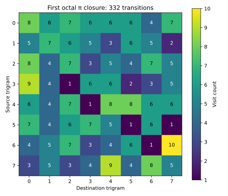
Given a static/coherently time-referenced record f_ab, assign each occurrence weight 1/(64 N_ab). Then the weighted sum is exactly (1/64) sum_ab f_ab. Equivalently, read every address at least once, register one value per address, and replace rather than add duplicate records. For target quadrature weights w_ab, use w_ab/N_ab instead. Neither rule creates a common-time snapshot for a changing system. It must be supplied by sample-and-hold, known transport or a derived coherent measurement.
Grouping antipodes gives face label min(a,7-a). The 4x4 matrix is [[23,23,20,25],[21,18,25,15],[21,21,18,20],[26,17,18,21]]. Its diagonal sum is 80. With independent origin weight 1/17 and raw visit weighting, the conditional TetB/Origin exchange stiffness is 1-(16/17)(80/332)=0.7732104890, not 13/17. Equal pair registration gives diagonal fraction 1/4 and restores 13/17 exactly under the exchange premise. Solid-angle boundary quadrature and equal-weight trace averaging represent distinct functionals; do not silently substitute one for the other.
For uniform weight on the eight unit cube vertices n=(±1,±1,±1)/sqrt(3), the first and third moments vanish and the second moment is I/3. But for a unit direction u,
The sphere’s corresponding moment is 1/5. Thus even an exactly balanced finite cube is not fully isotropic. For eight equal Newtonian point masses at radius a, the exterior multipole expansion (R>a) has no l=1,2,3 terms. The first possible anisotropic term is l=4:
This is a toy source with ordinary Newtonian gravity already assumed; not a claim about actual electron substructure. It is a concrete angular diagnostic of the proposed sweep.
Define A_i f(n)=(1/(2pi)) integral_0^{2pi} f(R_i(-theta)n) dtheta for axis i=x,y,z. Each A_i is an orthogonal projection on L2(S2), using the normalized solid-angle measure. On the degree-l harmonic subspace the axisymmetric subspace is one-dimensional, spanned by the unit zonal harmonic z_{l,i}=sqrt(2l+1) P_l(n_i). By the spherical harmonic addition theorem, <z_{l,i},z_{l,j}>=P_l(e_i dot e_j). For perpendicular axes p_l=P_l(0). A complete averaged three-sweep operation T=A_z A_y A_x has the exact restriction
Thus T_0=1, odd l are annihilated, and nonzero even l are contracted. The first-cycle norm is |p_l|^2, the nonzero eigenvalue is p_l^3. For l=2, p=-1/2, norm 1/4 and eigenvalue -1/8. For l=4, p=3/8, norm 9/64 and eigenvalue 27/512. Since |P_l(0)|<=1/2 for l>=1, on mean-zero L2 fields ||Tm||<=2{-(3m-1)}. Consequently repeated three-sweep averages converge in L2 to the monopole, which is preserved exactly in every sweep. A single triple cycle is not an exact spherical average. For an exact one-pass angular average, use Haar rotation measure dphi sin(theta)dtheta dpsi/(8pi^2) in a ZYZ Euler parametrization, not three independent uniform Euler angles.
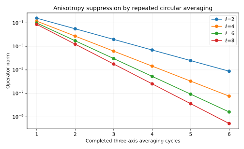
This theorem concerns averaging over full turns, not just end-point rotation. A physical model must derive angular transport, the averaging/reset operation, its conservation laws, and causal travel time. The three abstract axis vectors and the three visible circles do not establish such a process.
At each radius, angular averaging preserves the integral of a scalar radial flux density F_R(n). If the weak-field gravitational Gauss law is independently established, integral R^2 F_R dOmega=-4pi GM. Repeated averaging then drives F_R to the constant -GM/R^2 in L2. Gauss law itself requires a physical constitutive action and universal source coupling. A rotation cannot set G, derive a radial conservation law, or turn a scalar read into GR spin-2.
For literal 120-degree rotation of the cube about the Heaven–Earth diagonal, two vertices are fixed and the other six form two triples. The diagonal action on 64 ordered pairs has (64+4+4)/3=24 orbits: four fixed axial pairs and twenty length-three orbits. This differs from the previously proposed internal Pauli-cycle action (22 orbit coordinates). A candidate axial boundary condition identifying (0,0) with (7,7) and (0,7) with (7,0) would reduce the 24-dimensional physical-invariant ledger to 22 dimensions, one common plus 21 contrasts. This is a new conditional identification, not forced by spatial rotation or BBP TIME silence. It preserves only axial orientation reversal, not full inversion of the cube. No proof identifies its grade decomposition with 1+4+16 or its determinant with the gravity vertex. This is a useful constraint on the next microscopic derivation.
Construct a single energy-conserving microscopic dynamics for H36 plus physical phase transport with the following outputs: a BBP-type read (or explicit alternative), a coherent address ledger, no double counting, weighted angular averaging, and an external flux coupling. Prove why the proposed 21-mode collective determinant rather than an ordinary intensity supplies the source vertex, and derive its alpha factor and the 13/17 stiffness normalization. Only then can the new angular result be promoted from a conditional geometric mechanism to a physical unification.
python verify_pi_sweep.py requires numpy, scipy, mpmath
and matplotlib. 70 checks passed in this run (numerical integral, finite
matrices, coverage and spherical quadrature); the projection theorem is
analytical, the checks are not 70 independent proofs. Three figures are
supplied in SVG and PNG. No source repository modifications, empirical
tests, or original H36 dynamics rerun in this extension.
The octal expansion, rather than the decimal representation of the supplied crop formation, is the field-address hypothesis. The established crop formation decoding is decimal; the research does not independently establish that the formation uses octal digits or an I Ching encoding. The diagrams below reproduce the mathematical concepts discussed in chat, not historical evidence of field dynamics.
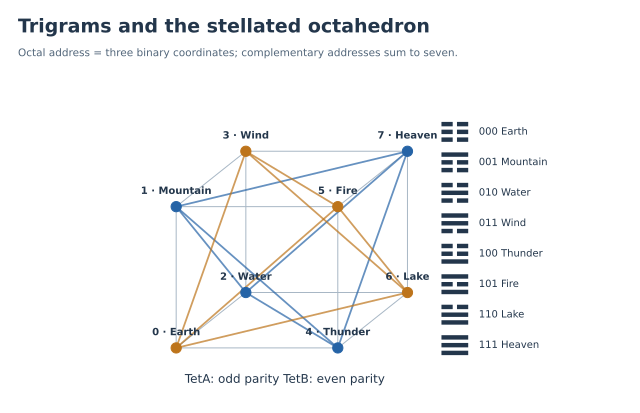
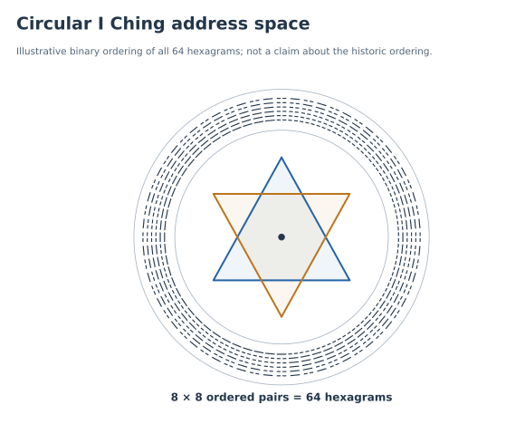
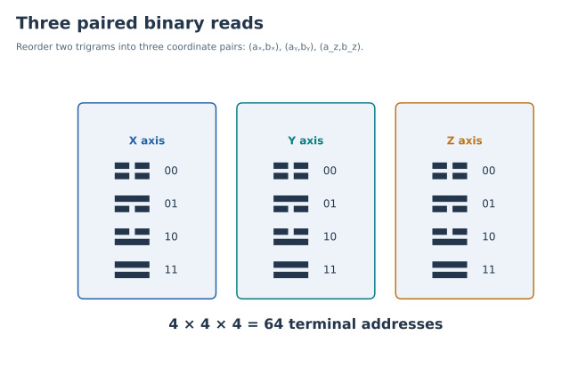
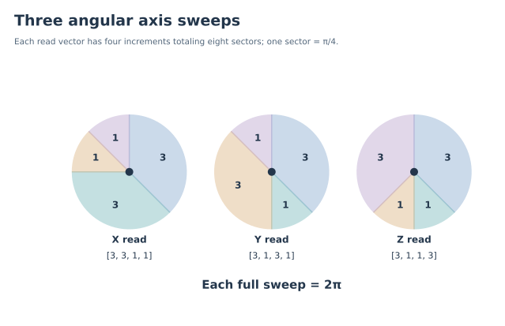
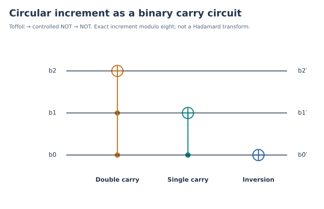
This circuit applies gates in descending bit order and is not a Hadamard transformation. The separate normalized Hadamard phase identity is
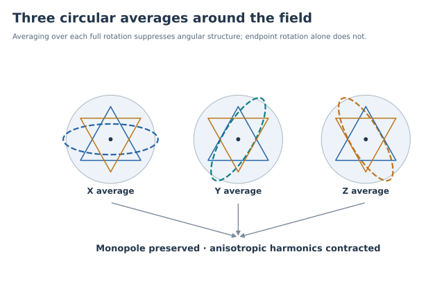
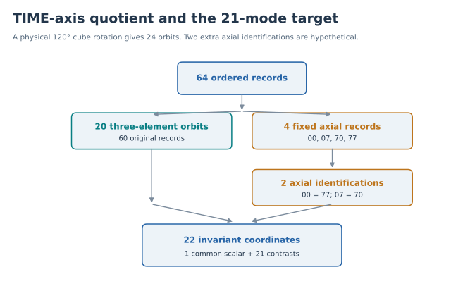
The two extra axial identifications are proposed constraints, not a result of the spatial rotation alone.
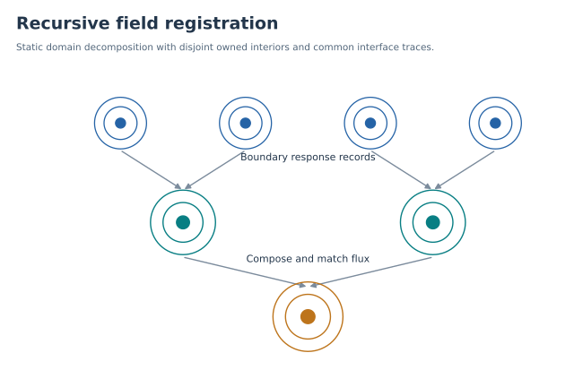
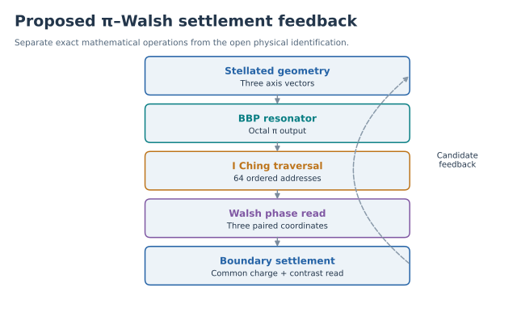
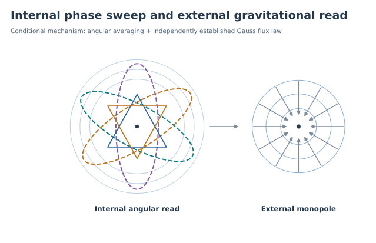
The flux law must be established independently of rotation. These graphics are candidate mechanisms, not a proof of their physical implementation.